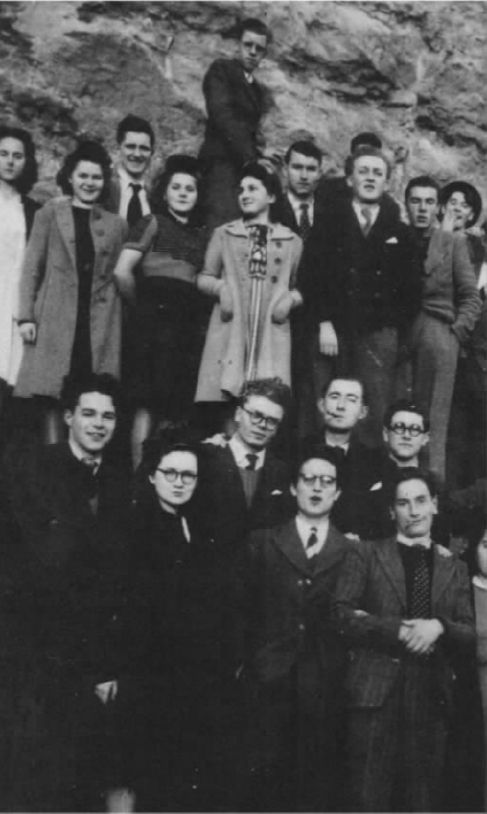
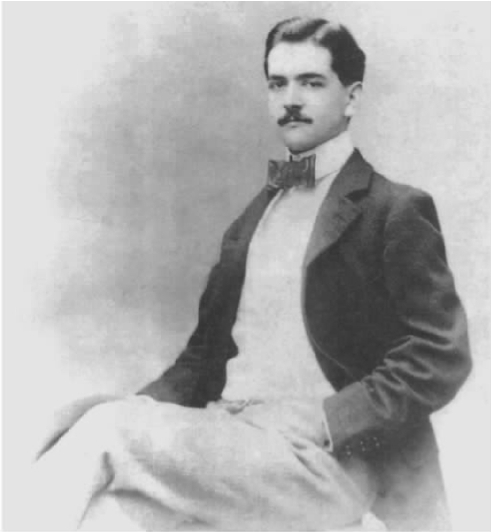

图1 福柯站得比同班同学高，1944年于普瓦捷
这些故事都不是假的，但它们共同的真实性使我们无法以任何确定的图画来描绘福柯的一生，而这正是福柯所希望的。帕特里夏·东克尔的小说名为《幻象福柯》，莫里斯·布朗肖所写的讣告题为“我想象中的福柯”，这些标题里都暗藏着智慧。至少就目前而言，我们对福柯的私生活知之甚少，对于他的生活和作品之间的联系最多也只能臆测。詹姆斯·米勒那本《福柯的生死爱欲》正表明了此种臆测有限的可能性以及明显的危险所在。
但是，既然我们可以从福柯的作品中解读福柯的生活，又为何执意要将福柯的生活融入他的作品呢？福柯的存在很大程度上就在于他的写作，想要了解福柯，这些作品远比那些侥幸逃出了记忆歪曲的琐闻轶事和福柯保持自己私人生活空间的努力更有参考价值。

图2 18岁时的雷蒙·鲁塞尔，1895年
解读福柯，最好的出发点是《雷蒙·鲁塞尔》——这是福柯此生唯一的一本文学研究专著，一部被他称为“非常私人”（《死亡与迷宫：雷蒙·鲁塞尔的世界》，访谈录，第185页）的作品。福柯选择鲁塞尔作为研究对象，这本身就具有启示性。直到20世纪50年代，也就是当福柯在一家左岸书店与鲁塞尔的作品不期而遇时，鲁塞尔（1877-1933）充其量只是一个不起眼的边缘作家，一个“实验派作家”。他的作品不遵循任何文学理论，也不从属于任何文学流派或运动，而是源于他对自己作家身份的一种自大狂式的自命不凡。（事实上，当时知名的精神病理学家皮埃尔·雅内曾研究过鲁塞尔，将其诊断为罹患了一种“转化了性质的宗教狂热症”。）得益于祖上留下的财富，鲁塞尔能够全身心投入写作，然而，从1894年直至逝世，除了受到一些超现实主义作家的提携性质的评论以及小说家雷蒙·凯诺的真诚膜拜之外，鲁塞尔所创作的诗歌、戏剧和小说作品所引发的主要是嘲笑或冷遇。
这一点不足为奇，因为鲁塞尔的作品中充满了对事物和动作的琐细描写，即使以先锋派的标准去衡量也有点过于奇特。正如他在那篇题为“我的某些作品如何写就”的文章（遵照他的意思，该文章在他死后方得出版）中解释的那样，他经常是根据自己奇怪的形式结构法则来创作的。例如，他会要求自己在一个故事的开篇和结尾用两个短语，这两个短语只有一个字母不同但意思却天悬地隔。遵照此律，一个故事若以“Les letters du blanc sur les bandes du vieux billard”（“旧的撞球桌垫上的白色字母”）开头，就要以“les letters du blanc sur les bandes du vieux pillard”（“白人关于那群老强盗的信”）结尾。此外，他还运用很多其他的写作规则，这些规则都是基于同声或同形字词的双重含义。
鲁塞尔最吸引福柯的是其被边缘化的地位——没有获得文学成功，同时被归类为“精神有问题”者。对那些被主流标准排斥在外的人群，福柯总是显示出兴趣和同情。这起初大抵是源于法国知识分子对于资产阶级一贯的厌弃态度，但随后渐渐发展成为一种强烈的个人信念，抵制一切试图划定整个社会的规范性排除法则。这种信念逐步演化成福柯对社会活动的热衷（例如他关于监狱改革的作品），同时促使他认为自己的作品是那些致力于社会和政治变革的人士可资利用的“工具箱”。
但同时，鲁塞尔作品中对人的主体性的拒斥也使福柯着迷。这种拒斥最明显的标志是鲁塞尔作品中空间客体性对于时间主体性的支配。鲁塞尔的典型做法是细致描写事物和动作而不叙述人物和他们的经历。并且，从另一个层面来说，这些作品也不表现作家自己的主体性。由于鲁塞尔严格遵循一些形式规则，与其说写下的文字是鲁塞尔思想和感情的流露，倒不如把它们看做语言本身非人格结构的产物。福柯对此类作品的青睐照应了他所提倡的“利用写作来摆脱自我面孔”（《知识考古学》，第17页），通过在作品中戴上一系列的面具来抛开任何既定的身份。正如他去世前不久所说的：“生活和工作中最大的乐趣在于成为别人，成为你起初不是的那个人。”（“真理，权力，自我”，第9页）
福柯明确地把语言中这一自我的丧失同对主体的绝对限制和废弃，即死亡联系在一起。他对鲁塞尔作品的分析始终围绕鲁塞尔鲜为人知又含糊可疑的死亡展开：鲁塞尔被发现死在他所居住的旅店房间的地板上，躺在一扇锁了的门前面（这扇门过去一直都是开着的），他可能想要打开这扇门来自救，也可能是他自己把门锁上以防止被救。在福柯看来，这一死亡情形照应了鲁塞尔在《我的某些作品如何写就》中所提供的打开他作品之门的“钥匙”：正如我们不知道他想用钥匙打开门让别人进来还是想锁上门防止别人进来，我们同样不能确定他所提供的“文学钥匙”是为了打开抑或锁闭文本的意义。他的死恰恰使我们永远无法获知这两个问题的答案。进一步说，阻止我们衡量鲁塞尔“文学钥匙”之价值的死亡对应了他作品中的语言，二者都系统地压制了作家和作品中人物的主观生活。
我们无法确知，福柯对死亡的关注——这一关注贯穿福柯全部的作品——是否正如米勒引导我们去猜测的那样，导致福柯有意将自己和他人置于艾滋病的危险之下；但有一点可以确定：福柯的作品沉迷于自我的丧失，这种丧失可以以死亡的形式出现，也可以反映在如鲁塞尔般遵循语言形式主义的写作中。
评论家们之所以通常把《雷蒙·鲁塞尔》排斥在福柯的经典作品之外，无疑是因为它不同于福柯的其他作品，不是一部“史”学之作。对此，福柯似乎很满意：“我甚至愿意说（《雷蒙·鲁塞尔》）在我的系列作品中不占一席之地……没有人注意到这本书，我很高兴，因为它就像我的秘密韵事。”（《死亡与迷宫：雷蒙·鲁塞尔的世界》，访谈录，第185页）
尽管这本书无法跻身福柯那些富有学识又充满哲思的史学“正典”之列，它所涉及的主题却在福柯的其他著作中一再出现，最为明显的体现就是同样出版于1963年的《临床医学的诞生》。此书开宗明义：“本书关注的对象是空间、语言和死亡。”（《临床医学的诞生》，第ix页）当然，在这部研究19世纪现代临床医学之诞生的学术著作中，以上主题都在很大程度上被改写了。所谓“空间”意指瘟疫横行的城市、医院的慈善病区以及被肢解了的躯体上的伤痕；“语言”在这里主要是描述医学症状和病情发展的可能趋势的术语；“死亡”则是指真实的死亡，而不是被边缘化的主体性的一种象征。
正如发生在福柯的文学研究中的情形那样，对空间（作为时间的对立面）和语言（作为一个自治的系统）的关注代表了一种思维模式，这种思维模式把主体性从人们通常赋予它的中心地位移除，转而使它臣属于各种结构体系。同时，死亡在福柯的现代医疗史中仍然是人类存在的核心。它不仅是一种消亡，还是“一种生命本质意义上的可能性”（《临床医学的诞生》，第156页），正是这一可能性（通过病理解剖术对人体的肢解）为我们那些关于生命的科学知识提供了根本依据。福柯总结说：“死亡离开了古老的悲情天堂，成为人的抒情内核：人隐形的真实，人可见的私密。”（《临床医学的诞生》，第172页）
在很多方面，《临床医学的诞生》都是《雷蒙·鲁塞尔》一书美学思想的科学镜像，它以严谨的历史分析的模式展现了福柯在耐心解读鲁塞尔巴洛克式复杂化作品时的主导思想。但是，这两本书的一个明显区别是，以博学见长的《临床医学的诞生》中偶然会爆发出猛烈的批评之火，而《雷蒙·鲁塞尔》中缺乏这样的火花。例如，在《临床医学的诞生》一书的序言部分，福柯先概述了自己下面所作讨论的几个主要阶段，然后，在就历史上的医疗方法作出任何总结性评论之前，福柯突然开始抨击那种认为现代医学“集中体现了一种古老的、和人的同情心一样历史久远的医疗人道主义”的观点，谴责那种“无知的关于理解的现象学”是“它们概念沙漠中的沙尘和这种半生不熟的观念的混生物”。
福柯接着开始嘲讽“描绘医生/病人关系（le couple medicin-malade）的略带色情意味的词汇”，他认为，那些词汇“在努力将一种类似婚姻幻象的苍白力量传递给如此无思想者时耗尽了自己”（《临床医学的诞生》，第xiv页）。这种突发的批判虽属偶然，但在福柯的历史研究中很典型，并且，正如我们将要看到的，这样的批判预示了福柯的历史研究在政治方面的最终指向。相形之下，《雷蒙·鲁塞尔》所展现的福柯完全沉浸在审美愉悦之中，他是在书写关于一段“欢乐时光”的回忆录，那时“连续几个夏天鲁塞尔都是我的最爱”（《死亡与迷宫：雷蒙·鲁塞尔的世界》，访谈录，第185页）。我认为福柯的生活和思想中存在一种美学思考和政治激进主义之间的根本张力，上述对比恰恰为此张力提供了早期的鲜明佐证。